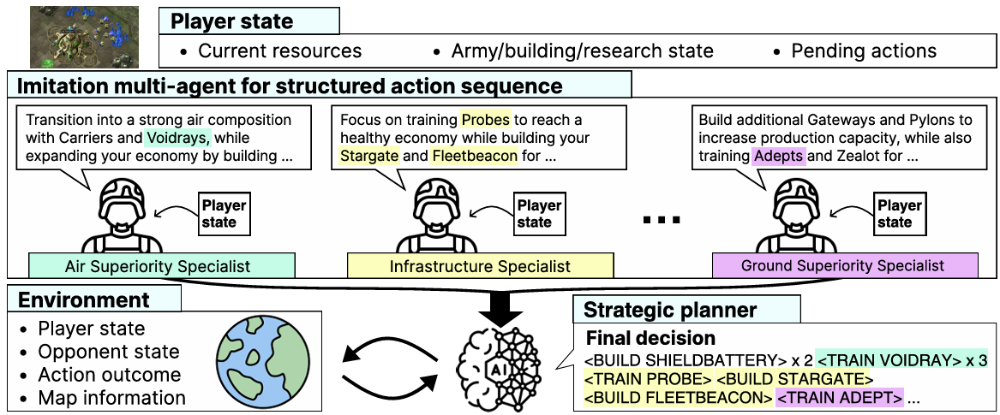
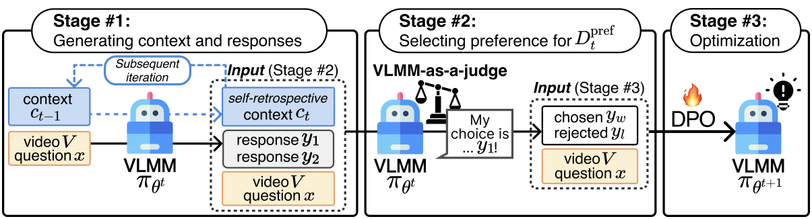
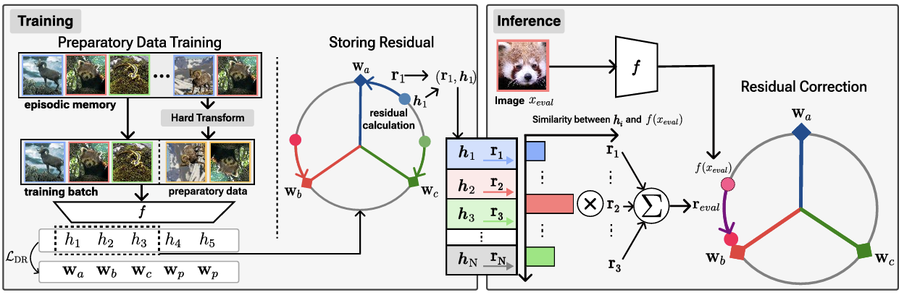

San Kim
I'm a second-year Master's student at the Graduate School of Artificial Intelligence at Seoul National University, advised by Prof. Jonghyun Choi. My research focuses on LLM and VLM agents.
I received my B.S. degree from Yonsei University, where I studied computer science.
CV / Email / Google Scholar / LinkedIn / Github


